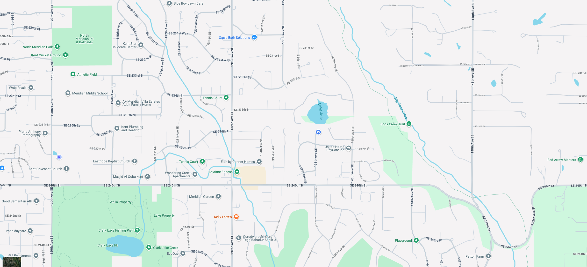

<div class="mock-data">
  <div *ngIf="useMockMap" class="mock-badge">
    <span>Mock Google Map Enabled</span>
  </div>
</div>
  <ng-container >
    <div *ngIf="useMockMap; else liveMap" class="mock-map">
      
    </div>

    <ng-template #liveMap>
    <div id="map" style="width: 100%; height: 600px;"></div>
    </ng-template>

  </ng-container>


